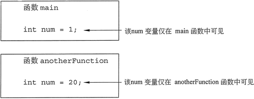

首页 > 编程笔记
C++局部变量和全局变量（详解版）
局部变量定义在一个函数内部，在函数之外是不可访问的。全局变量定义在所有函数之外，并且在其作用域内的所有函数都可以访问。下面做详细讲解。
注意，函数的形参也是局部变量，其作用域仅限于函数体。
可以使用形参变量初始化局部变量，有时这能简化函数中的代码。例如在下面的 sum 函数中，形参被用于初始化局部变量 result：
下面的程序显示了两个函数 main 和 anotherFunction，它们访问相同的全局变量 num：
在 C++ 中，除非明确初始化数字全局变量，否则它们将自动初始化为零。全局字符变量初始化为 NULL。在下面程序中，变量 globalNum 永远不会被语句设置为任何值，但由于它是全局变量，因此它将自动被设置为零。
当初学者刚开始学习编写具有多个函数的程序时，可能会想要将所有变量全局化，这样它们就可以被程序中的任何函数访问，而不作为实参传递。虽然这种方法可能使程序创建更容易，但通常会在后期导致很多问题，比如：
因此，最好不要使用全局变量来存储、操作和检索数据。相反，在大多数情况下，应该使用局部变量，并将其作为实参传递给需要访问它们的函数。
但是，可以使用与全局变量或常量相同名称的形参或局部变量。执行此操作时，形参或局部变量的名称会屏蔽全局变量或常量的名称，这意味着全局变量或常量的名称被形参或局部变量的名称隐藏，所以，在该程序的这一部分中，全局变量或常量不能被看到或使用。
下面的程序说明了这一点，它有一个名为 BIRDS 的全局常量被设置为 500，而在 California 函数中有一个名为 BIRDS 的局部常量则被设置为 10000。
局部变量
函数中定义的变量是该函数的局部变量。它们在其他函数的语句中是不可见的，通常无法访问它们。下面的程序显示，由于函数中定义的变量被隐藏，所以其他函数可以拥有名称相同但实际上互不相干的变量。#include <iostream> using namespace std; void anotherFunction() ; // Function prototype int main() { int num = 1; // Local variable cout << "In main, num is " << num << endl; anotherFunction(); cout << "Back in main, num is still " << num << endl; return 0; } void anotherFunction() { int num = 20; // Local variable cout << "In anotherFunction, num is " << num << endl; }程序输出结果：
In main, num is 1
In anotherFunctionr, num is 20
Back in main, num is still 1

图 1 局部变量及其作用域
图 1 局部变量及其作用域
注意，函数的形参也是局部变量，其作用域仅限于函数体。
局部变量生存期
只有在定义的函数正在执行时，局部变量才存在，这称为局部变量的生存期。当函数开始时，它的形参变量和它定义的任何局部变量都将在内存中创建，当函数结束时，它们被销毁。这意味着存储在函数形参或局部变量中的任何值在调用不同函数之后都会丢失。可以使用形参变量初始化局部变量，有时这能简化函数中的代码。例如在下面的 sum 函数中，形参被用于初始化局部变量 result：
int sum(int num1, int num2)
{
int result = num1 + num2;
return result;
}
全局变量
全局变量是程序中定义在所有函数（包括 main 函数）之外的任何变量。全局变量的作用域是程序从变量定义到整个程序结束的部分。这意味着全局变量可以被所有定义在全局变量之后的函数访问。下面的程序显示了两个函数 main 和 anotherFunction，它们访问相同的全局变量 num：
#include <iostream>
using namespace std;
void anotherFunction(); // Function prototype
int num = 2; // Global variable
int main()
{
cout << "In main, num is " << num << endl;
anotherFunction();
cout << "Back in main, num is " << num << endl;
return 0;
}
void anotherFunction ()
{
cout << "In anotherFunction, num is " << num << endl;
num = 50;
cout << "But, it is now changed to " << num << endl;
}
程序输出结果：
In main, num is 2
In anotherFunction, num is 2
But, it is now changed to 50
Back in main, num is 50
在 C++ 中，除非明确初始化数字全局变量，否则它们将自动初始化为零。全局字符变量初始化为 NULL。在下面程序中，变量 globalNum 永远不会被语句设置为任何值，但由于它是全局变量，因此它将自动被设置为零。
//This program has an uninitialized global variable.
#include <iostream>
using namespace std;
int globalNum; // Global variable automatically set to zero
int main()
{
cout << "globalNum is " << globalNum << endl;
return 0;
}
程序输出结果：
globalNum is 0
注意，局部变量不会像全局变量那样自动初始化，程序员必须对它进行处理。虽然全局变量可以很有用，但是应该限制对它们的使用。当初学者刚开始学习编写具有多个函数的程序时，可能会想要将所有变量全局化，这样它们就可以被程序中的任何函数访问，而不作为实参传递。虽然这种方法可能使程序创建更容易，但通常会在后期导致很多问题，比如：
- 全局变量使调试变得困难。程序中的任何语句都可以更改全局变量的值。如果发现在全局变量中存储了错误的值，则必须跟踪访问它的每个语句，以确定错误值来自哪里。在具有成千上万行代码的程序中，这是非常困难的。
- 使用全局变量的函数通常要依赖这些变量。如果想在不同的程序中使用这样一个函数，则很可能必须重新设计它，使它不再依赖于全局变量。
- 全局变量使程序难以理解。由于全局变量可以通过程序中的任何语句进行修改，因此，要了解任何使用了全局变量的那一部分程序，则必须了解访问该全局变量的所有程序其他部分。
因此，最好不要使用全局变量来存储、操作和检索数据。相反，在大多数情况下，应该使用局部变量，并将其作为实参传递给需要访问它们的函数。
具有相同名称的局部变星和全局变量
在同一个函数中不能拥有两个相同名称的局部变量，这个规则也适用于形参变量。形参变量本质上是局部变量，所以，不能在同一个函数中给出同名的形参变量和局部变量。但是，可以使用与全局变量或常量相同名称的形参或局部变量。执行此操作时，形参或局部变量的名称会屏蔽全局变量或常量的名称，这意味着全局变量或常量的名称被形参或局部变量的名称隐藏，所以，在该程序的这一部分中，全局变量或常量不能被看到或使用。
下面的程序说明了这一点，它有一个名为 BIRDS 的全局常量被设置为 500，而在 California 函数中有一个名为 BIRDS 的局部常量则被设置为 10000。
#include <iostream> using namespace std; void California (); // Function prototype const int BIRDS = 500; // Global constant int main() { cout << "In main there are " << BIRDS << " birds.\n"; California(); return 0; } void California() { const int BIRDS = 10000; cout << "In California there are " << BIRDS << " birds.\n"; }程序输出结果：
In main there are 500 birds.
In California there are 10000 birds.
关注公众号「站长严长生」，在手机上阅读所有教程，随时随地都能学习。内含一款搜索神器，免费下载全网书籍和视频。

微信扫码关注公众号